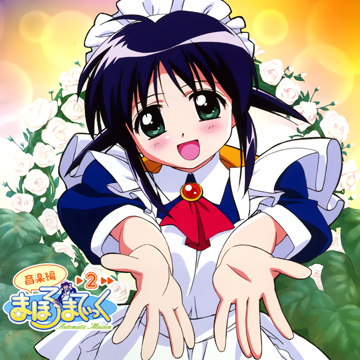

CD list¶
- まほろまてぃっく 音楽編1
- まほろまてぃっく CD どらまてぃっく1
- まほろまてぃっく CD どらまてぃっく2
- まほろまてぃっく CD どらまてぃっく3
- まほろまてぃっく 音楽編2
- まほろまてぃっく アフタースクール after school
- まほろまてぃっく とりおでいこう♪
- まほろまてぃっく ラジオdeどらまていっく
- まほろまてぃっく～もっと美しいもの～ 音楽編
- まほろまてぃっく～もっと美しいもの～ サウンドパーティ ―まほろ盤―
- まほろまてぃっく～もっと美しいもの～ サウンドパーティ ―みなわ盤―
- まほろまてぃっく～もっと美しいもの～ Sound Maiden
- まほろまてぃっく for 川澄綾子
- まほろまてぃっく まるち・とーきんぐ
- ハート撃ち抜きます
- 夢見るメイドさん
まほろまてぃっく 音楽編1¶

- PICA-1246
- 2001/11/22
- [歌] かえりみち
- [曲] アイキャッチ
- [曲] ヴェスパーの偉大なる戦士
- [曲] はい、それが私です
- [曲] 美里優·中学生·一人暮らし
- [曲] メイドさんがやって来た
- [曲] 母のぬくもり
- [曲] 最後の願い
- [曲] トラブル発生!
- [曲] ホッと一息
- [曲] 2年4組のみなさん
- [曲] 女教師·式条沙織(25歳)
- [曲] 式条のエロエロ·パート1(昼の部)
- [曲] えっちなのはいけないと思います!
- [曲] 式条のエロエロ·パート2(夜の部)
- [曲] 調教美獣VSつるぺたメイド·果てしなき戦い
- [曲] 騒!騒!騒!
- [曲] あんの小娘がっ!千切れ飛ぶかと…
- [曲] 縁側にて
- [曲] 最後の願い(バリエージョン)
- [曲] 悲しみは戦場の彼方に
- [曲] あやまちの記憶
- [曲] 紫陽花の咲く庭で(Instrumental)
- [曲] 残された時間
- [歌] まほろDEまんぼー
- [曲] かえりみち(オリジナル·カラオケ)
- [曲] まほろDEまんぼー(オリジナル·カラオケ)
- [曲] まほろさん、目覚ましコール
- [语] おまけメッセージ“まほろさん、目覚ましコール”
- [语] おまけメッセージ“まほろさん、留守電コール”
- [语] おまけメッセージ“まほろさん、カップラーメンタイマー”
- [语] おまけメッセージ“「えっちなのはいけないと思います」五段階活用”
まほろまてぃっく CD どらまてぃっく1¶
- PICA-0012
- 2001/12/21
- [歌] メイドのココロ（歌：まほろさん）
- [语] まろまろま日記.その1「まほろさんの一日」
- [歌] おお!ハピネス（歌：まほろさん＆優くん）
- [语] こんなおはなしはいけないと思います.その1「新婚はんいらっしゃい」
- [语] キャラクターメッセージ
- [曲] メイドのココロ(Original Karaoke)
- [曲] おお!ハピネス(Original Karaoke)
まほろまてぃっく CD どらまてぃっく2¶

- PICA-0013
- 2001/12/21
- [歌] てんこもりLOVE天国（歌：とりおまてぃっく）
- [语] まろまろま日記.その2「さくら湯へ行こう!!」
- [歌] 脇・スポットライト（歌：さぶ★キャラッツ）
- [语] こんなおはなしはいけないと思います.その2「カプセル IN まほろまてぃっく」
- [语] キャラクターメッセージ
- [曲] てんこもりLOVE天国(Original Karaoke)
- [曲] 脇・スポットライト(Original Karaoke)
まほろまてぃっく CD どらまてぃっく3¶

- PICA-0014
- 2001/12/21
- [歌] ほん・ふわ・しゅっしゅ（歌：まほろさん）
- [语] まろまろま日記.その3「Happy Birthday 優!!」
- [歌] カン治外法権 ～アタシ流～（歌：式条先生）
- [语] こんなおはなしはいけないと思います.その3「えっちなのはいいと思います」
- [语] キャラクターメッセージ
- [曲] ほん・ふわ・しゅっしゅ (Original Karaoke)
- [曲] カン治外法権 ～アタシ流～(Original Karaoke)
まほろまてぃっく 音楽編2¶
- PICA-1237
- 2002/2/22
- [曲] WARNING!
- [曲] 目が…見えない!
- [曲] 恐怖と戦慄の一夜
- [曲] 緋立第四中学の九不思議を検証せよ!
- [曲] 「赤毛の安藤さん」
- [曲] サポートメカV1046R9-SLASH ZERO
- [曲] 流河先生登場
- [曲] リューガVSまほろ&スラッシュ
- [曲] 疑惑
- [曲] 確信,そして忠告
- [曲] そうだ,木に登ろう…。
- [曲] 宿命の対峙 Part.1
- [曲] 宿命の対峙 Part.2
- [歌] まあるいお月さま(川澄綾子)
- [歌] メイドさんって素敵です(川澄綾子)
- [歌] 紫陽花の咲く庭で(川澄綾子)〈CDドラマ まほろまていっく~Automatic Maiden~外伝 第5章「今日も元気なメイドさん」第3.5話「大晦日大掃除大勝負」〉
- [语] 第一幕
- [语] 第ニ幕
- [语] 第三幕
- [语] 第四幕
- [语] 閉幕
まほろまてぃっく アフタースクール after school¶

- PICA-0017
- 2002/4/1
- [歌] アフタースクール
- [歌] いち、にの、さんっ、Ｐｅａｃｅ！
- [语] とりおまてぃっくデビューおめでとうメッセージ
- [曲] アフタースクール（オリジナルカラオケ）
- [曲] いち、にの、さんっ、Ｐｅａｃｅ！（オリジナルカラオケ）
- [歌] まほろＤＥまんぼー（ウキウキＨｉｐ-ＨｏｐＶＥＲＳＩＯＮ）
- [歌] まほろＤＥまんぼー（ＴＶサイズ）
まほろまてぃっく とりおでいこう♪¶
- PICA-1256
- 2002/9/6
- [歌] 茶の間でチャチャチャ
- [歌] ワンダフルにスペシャルでビューティフル！
- [歌] アフタースクール
- [歌] 「長」のつく女
- [歌] 友情＜愛情（ゆうじょうよりあいじょう）
- [歌] 食べちゃいたいの
- [歌] てんこもりLOVE天国
- [歌] 声をそろえて…
- [歌] まほろDEまんぼー
まほろまてぃっく ラジオdeどらまていっく¶

- PICA-1257
- 2002/9/26
- Disc1:
- [歌] まほろDEまんぼー (ウキウキ HIP-HOP Short Version)
- [语] 第1話 またまた過去に追われるメイドさん
- [语] 第2話 シャーマンクッキング
- [语] 第3話 とりおまてぃっくすぱいらる
- [语] 第4話 となりのトロロ
- [语] 第5話 むにゃしひべ
- [语] 第6話 今、君が燃え尽きるとき
- [语] 第7話 緋立悶絶川下り!!
- [语] 第8話 スラッシュの独白
- [语] 第9話 はまぢ式、試験必勝法!?
- [语] 第10話 カラオケあるある大辞典
- [语] 第11話 優、ただいま増殖中!?
- [歌] アフタースクール after school (Short Version)
- Disc2:
- [语] 第12話 まほろまてぃっく~もっと美しいもの~前夜祭
- [歌] そ・れ・い・ゆ (TV SIZE)
まほろまてぃっく～もっと美しいもの～ 音楽編¶
- PICA-1258
- 2002/12/6
- [歌] そ・れ・い・ゆ
- [曲] 妹ができました。
- [曲] よろしくお願いします。
- [曲] はじめてのことばかりで …
- [曲] ごめんなさい
- [曲] CODE＃370
- [曲] レギュラー陣も健在！？
- [曲] 管理者 (THE KEEPER)
- [曲] もっと美しいもの…
- [曲] For The New Generation Part.1
- [曲] For The New Generation Part.2
- [曲] For The New Generation Part.3
- [曲] For The New Generation Part.4
- [曲] So Long ～
- [歌] とりおまてぃっく ラン らん 乱♪
- [曲] そ・れ・い・ゆ（オリジナル・カラオケ）
- [曲] とりおまてぃっく ラン らん 乱♪（オリジナル・カラオケ）
- [语] みなわちゃん～もっとききたいもの～ おまけメッセージ
- [语] みなわちゃん～もっとききたいもの～ おまけメッセージ
- [语] みなわちゃん～もっとききたいもの～ おまけメッセージ
- [语] みなわちゃん～もっとききたいもの～ おまけメッセージ
- [语] みなわちゃん～もっとききたいもの～ おまけメッセージ
- [语] みなわちゃん～もっとききたいもの～ おまけメッセージ
- [语] みなわちゃん～もっとききたいもの～ おまけメッセージ
- [语] みなわちゃん～もっとききたいもの～ おまけメッセージ
- [语] みなわちゃん～もっとききたいもの～ おまけメッセージ
- [语] みなわちゃん～もっとききたいもの～ おまけメッセージ
- [语] みなわちゃん～もっとききたいもの～ おまけメッセージ
- [语] みなわちゃん～もっとききたいもの～ おまけメッセージ
- [语] みなわちゃん～もっとききたいもの～ おまけメッセージ
- [语] みなわちゃん～もっとききたいもの～ おまけメッセージ
- [语] みなわちゃん～もっとききたいもの～ おまけメッセージ
- [语] みなわちゃん～もっとききたいもの～ おまけメッセージ
- [语] みなわちゃん～もっとききたいもの～ おまけメッセージ
- [语] みなわちゃん～もっとききたいもの～ おまけメッセージ
- [语] みなわちゃん～もっとききたいもの～ おまけメッセージ
- [语] みなわちゃん～もっとききたいもの～ おまけメッセージ
- [语] みなわちゃん～もっとききたいもの～ おまけメッセージ
まほろまてぃっく～もっと美しいもの～ サウンドパーティ ―まほろ盤―¶

- PICA-0021
- 2002/12/21
- [歌] ぐっとモーニング(まほろ:川澄綾子)
- [歌] 思春期なんてトホホのHo(美里優:瀧本富士子)
- [歌] 今日はわたしが起こしてア・ゲ・ル(とりおまてぃっく:菊池由美,水野愛日,真田アサミ)
- [语] サウンドパーティ～もっと聞きたいもの～「歓迎！美里家ご一行様・Sideまほろさん」
- [曲] ぐっとモーニング（オリジナル・カラオケ）
- [曲] 思春期なんてトホホのHo（オリジナル・カラオケ）
- [曲] 今日はわたしが起こしてア・ゲ・ル（オリジナル・カラオケ）
まほろまてぃっく～もっと美しいもの～ サウンドパーティ ―みなわ盤―¶

- PICA-0022
- 2002/12/21
- [歌] よいもの(みなわ:清水愛)
- [歌] 純情可憐オホホのHo！(式条沙織:高田由美)
- [歌] 友よ，オレの胸で眠れ～タキシードは夜の保護色～(さぶ★キャラッツ:荻原秀樹,私市淳)
- [语] サウンドパーティ～もっと聞きたいもの～「歓迎！美里家ご一行様・Sideみなわちゃん」
- [曲] よいもの（オリジナル・カラオケ）
- [曲] 純情可憐オホホのHo！（オリジナル・カラオケ）
- [曲] 友よ，オレの胸で眠れ～タキシードは夜の保護色～（オリジナル・カラオケ）
まほろまてぃっく～もっと美しいもの～ Sound Maiden¶

- PICA-1260
- 2003/3/26
- [歌] お茶にしましょう（歌うメイドさん）
- [歌] いっしょだから（歌うメイドさん）
- [歌] 「ありがとう」（歌うメイドさん）
- [语] まほろまてぃっく～もっと美しいもの～プラスワン「時をかけるメイドさん…というか優さん？」（CDドラマ）
- [曲] お茶にしましょう（歌えるメイドさん～オリジナル・カラオケ集）
- [曲] いっしょだから（歌えるメイドさん～オリジナル・カラオケ集）
- [曲] 「ありがとう」（歌えるメイドさん～オリジナル・カラオケ集）
- [曲] メイドさんって素敵です（歌えるメイドさん～オリジナル・カラオケ集）
- [曲] メイドのココロ（歌えるメイドさん～オリジナル・カラオケ集）
- [曲] ぽん・ふわ・しゅっしゅ（歌えるメイドさん～オリジナル・カラオケ集）
- [曲] まあるいお月さま（歌えるメイドさん～オリジナル・カラオケ集）
- [曲] ぐっとモーニング（歌えるメイドさん～オリジナル・カラオケ集）
まほろまてぃっく for 川澄綾子¶

- PICA-1261
- 2003/3/26
- [歌] そ・れ・い・ゆ
- [歌] メイドさんって素敵です
- [歌] ぐっとモーニング
- [歌] メイドのココロ
- [歌] 紫陽花の咲く庭で
- [歌] 告白。
- [歌] 濃縮還元 まほろ
- [歌] ぽん・ふわ・しゅっしゅ
- [歌] まあるいお月さま
- [歌] わたしのしあわせ
- [歌] かえりみち
まほろまてぃっく まるち・とーきんぐ¶

- PICA-1282
- 2003/9/26
- [语] 映画館
- [语] スラッシュ
- [语] 美里優
- [语] 川原清巳
- [语] 大江千鶴子
- [语] 佐倉深雪
- [语] 等々力凛
- [语] 安藤みなわ・浜口俊也・式条沙織
- [语] えっちなのは…
- [语] まほろさん
- [歌] 緋立娘HA!伊達音頭 歌：清水愛
- [曲] 緋立娘HA!伊達音頭 (オリジナル・カラオケ)
- [曲] シルヴァプラナ [まほろまてぃっく ～もっと美しいもの～ extra sound tracks]
- [曲] in a bar [まほろまてぃっく ～もっと美しいもの～ extra sound tracks]
- [曲] 激突! [まほろまてぃっく ～もっと美しいもの～ extra sound tracks]
- [曲] So Long ～ もっと美しいもの [まほろまてぃっく ～もっと美しいもの～ extra sound tracks]

{kind=link}
{kind=link}
{kind=link}
{kind=link}
{kind=link}